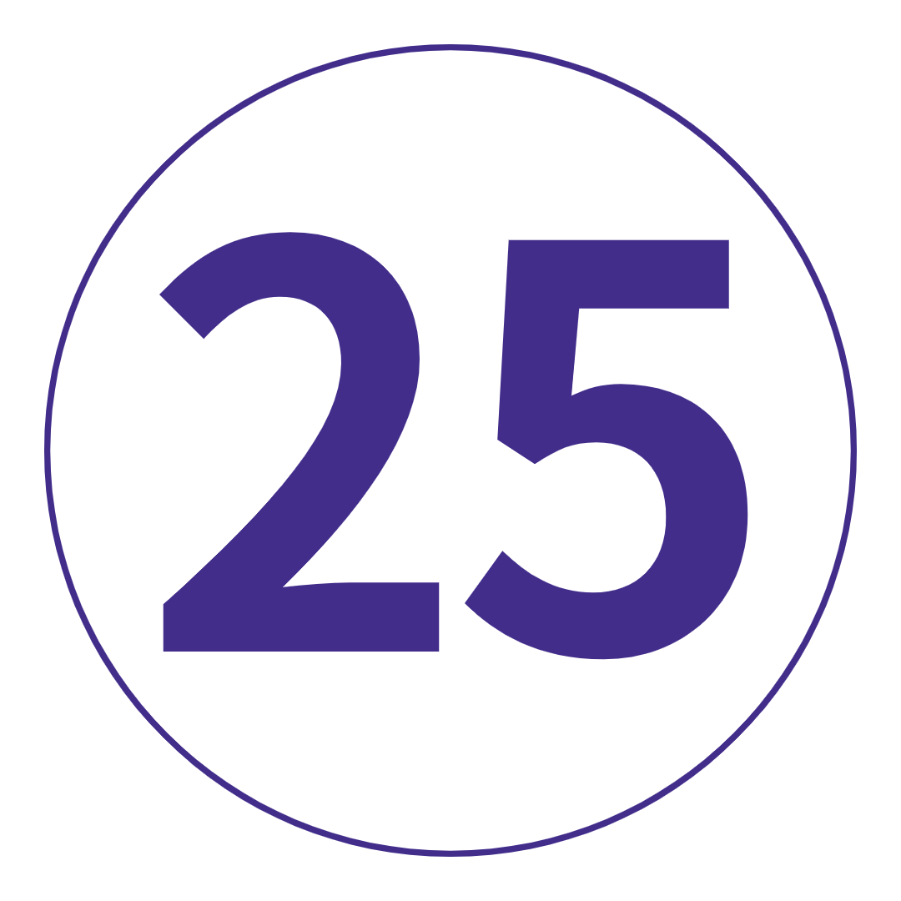

18 일
8 국가
1 인당
US $ 2,763.00 부터

여행 코드: EEWGLL-1
여행 노트 다운로드-
날짜 및 가격 확인
2021년 12월 12월 1일 수 ~ 12월 18일 토 겨울 휴가 2021-22 US$2,763.00
|
여행개요 |
|
 밤 밤 |
 식사 |
 호스텔플러스 호스텔플러스 |
 최대 인원 최대 인원 |
 여행 가이드 여행 가이드 |
|
| 시 작 | 06 : 00 런던 (또는 17 : 00 파리) |
| 종 료 | 09 : 00 암스테르담 (또는 21 : 00 런던) |
여행 개요
지도
당신을 위한 여행인가요? 제멋대로 하게 하는. 독특하다. 매혹적인.
Q: 미친 인파를 제외하고 한 달 안에 유럽의 가장 좋은 부분을 보려면 어떻게 해야 합니까? A: 여기, 바로 여기. 베를린과 피렌체의 미식 수도를 발견하십시오. 오오오오오오오오오오오오! 마음을
설레게 하는 알프스와 멋진 AF 사람들과 함께 라이딩을 함께 해보세요.
기억에 남을 눈 덮인 여행이 될 것입니다. 또한, 문화가 가득하고 탄수화물이 풍부하고 생명을 긍정하는 각 목적지와 실제로 원하는 모든 포함 사항을 알 수 있는 충분한 시간이 있습니다. 준비된?
여행 일정
-
 영국 런던에서 프랑스 파리로 (또는 파리에 합류)
미지의 것을 발견하고 사람들을 찾고 새롭고 이국적인 것을 경험할 준비가 되셨습니까? 우리는 그렇게 생각했습니다. LDN(또는 이후 파리)에서 승무원을 만나십시오. 채널을 가로질러 드라이브를 하기 위해 일찍 출발합니다. Louis Vuitton, ol' Mona 및 세계 최고의 디저트의 본고장 - 파리는 패션, 문화, 음식의 모든 것에 대한 유럽의 수도라는 명성을 얻었습니다. 오늘 밤 함께 저녁 식사를 하기 전에 드라이브 투어에서 모든 쇼 스토퍼를 확인하세요. 잘 될거야.
영국 런던에서 프랑스 파리로 (또는 파리에 합류)
미지의 것을 발견하고 사람들을 찾고 새롭고 이국적인 것을 경험할 준비가 되셨습니까? 우리는 그렇게 생각했습니다. LDN(또는 이후 파리)에서 승무원을 만나십시오. 채널을 가로질러 드라이브를 하기 위해 일찍 출발합니다. Louis Vuitton, ol' Mona 및 세계 최고의 디저트의 본고장 - 파리는 패션, 문화, 음식의 모든 것에 대한 유럽의 수도라는 명성을 얻었습니다. 오늘 밤 함께 저녁 식사를 하기 전에 드라이브 투어에서 모든 쇼 스토퍼를 확인하세요. 잘 될거야.
키워드 공식 만찬 + 파리 드라이브 투어 -
 파리에펠탑 아래에는 값비싼 핸드백과 독창적이지 않은 포즈보다 더 많은 것이 있습니다. 저희를 믿으세요. 그 버킷리스트 항목을 체크하고 뒷골목을 탐험하는 자유 시간을 보내십시오. 마을 최고의 제과점을 찾아보세요(추천은 여행 리더에게 문의하세요). Shakespeare and Co. Bookshop에서 역사의 서가 사이에서 길을 잃으십시오. 또는 I Love You Wall에서 기분 좋은 분위기를 연출해보세요. 워커 아님? 겨울 추위를 이겨내고 옵션으로 제공되는 자전거 투어에서 송아지를 훈련시키십시오. 또는 강 유람선을 타고 빛의 도시의 다른 모습을 볼 수도 있습니다. 오늘 밤, 카바레에서 저녁을 보내십시오. 생각해보세요: 반짝이는 조명, 반짝이는 의상, 죽음을 무릅쓰는 곡예사!
파리에펠탑 아래에는 값비싼 핸드백과 독창적이지 않은 포즈보다 더 많은 것이 있습니다. 저희를 믿으세요. 그 버킷리스트 항목을 체크하고 뒷골목을 탐험하는 자유 시간을 보내십시오. 마을 최고의 제과점을 찾아보세요(추천은 여행 리더에게 문의하세요). Shakespeare and Co. Bookshop에서 역사의 서가 사이에서 길을 잃으십시오. 또는 I Love You Wall에서 기분 좋은 분위기를 연출해보세요. 워커 아님? 겨울 추위를 이겨내고 옵션으로 제공되는 자전거 투어에서 송아지를 훈련시키십시오. 또는 강 유람선을 타고 빛의 도시의 다른 모습을 볼 수도 있습니다. 오늘 밤, 카바레에서 저녁을 보내십시오. 생각해보세요: 반짝이는 조명, 반짝이는 의상, 죽음을 무릅쓰는 곡예사!
키워드 아침밥
추가 옵션 파리 카바레 쇼: €65부터 / 세느강 유람선: €10부터 / 파리 자전거 투어: €30부터 -
 파리에서 스위스 알프스, 스위스까지
거짓말이 아닙니다. 장거리 운전입니다. 그러나 당신은 당신의 마음을 사로잡을 멋진 음악과 아름다운 전망을 가지고 있습니다. 아픈 AF 여행 동료는 말할 것도 없고요. 'Top of Europe', 급류하는 폭포, 스위스에서 가장 큰 자연 보호 지역 중 하나인 'Top of Europe'의 본고장인 오늘밤 우리는 동화 같은 Lauterbrunnen 계곡에서 잠을 자고 있습니다. 저녁 식사 후에는 몸을 감싸고 김이 모락모락 나는 글루바인 한 잔과 함께 신선한(얼어붙은) 고산 공기에 앉으십시오. 예, 이것이 당신이 온 이유입니다.
파리에서 스위스 알프스, 스위스까지
거짓말이 아닙니다. 장거리 운전입니다. 그러나 당신은 당신의 마음을 사로잡을 멋진 음악과 아름다운 전망을 가지고 있습니다. 아픈 AF 여행 동료는 말할 것도 없고요. 'Top of Europe', 급류하는 폭포, 스위스에서 가장 큰 자연 보호 지역 중 하나인 'Top of Europe'의 본고장인 오늘밤 우리는 동화 같은 Lauterbrunnen 계곡에서 잠을 자고 있습니다. 저녁 식사 후에는 몸을 감싸고 김이 모락모락 나는 글루바인 한 잔과 함께 신선한(얼어붙은) 고산 공기에 앉으십시오. 예, 이것이 당신이 온 이유입니다.
키워드 아침밥 + 공식 만찬 -
 스위스 알프스
스위스 알프스에 Tinder 약력이 있다면 다음과 같이 읽힐 것입니다. 재미로 가득한 야외 애호가 – 모험을 공유할 동료 아드레날린을 좋아하는 눈 토끼를 찾고 있습니다. 오른쪽으로 스와이핑? 눈 하이킹. 스키 타기. 스노보드. 스카이 다이빙. 헬리콥터 탑승. 이 곳은 모든 것을 갖추고 있습니다. 더 많은 스릴 회피? 융프라우반(Jungfraubahn) 철도를 타고 하얗게 물든 정상의 전망을 모두 감상하세요(노력 제외). 그런 다음 탄력 있는 허리띠를 시험해 보십시오. 우리는 크림 같은 스위스 핫 초콜릿, 끈적끈적한 치즈 퐁듀, 탄수화물이 가득한 감자 뢰스티, 그리고 älplermagronen(맥앤치즈를 생각하면 좋지만 더 좋습니다)에 대해 이야기하고 있습니다.
스위스 알프스
스위스 알프스에 Tinder 약력이 있다면 다음과 같이 읽힐 것입니다. 재미로 가득한 야외 애호가 – 모험을 공유할 동료 아드레날린을 좋아하는 눈 토끼를 찾고 있습니다. 오른쪽으로 스와이핑? 눈 하이킹. 스키 타기. 스노보드. 스카이 다이빙. 헬리콥터 탑승. 이 곳은 모든 것을 갖추고 있습니다. 더 많은 스릴 회피? 융프라우반(Jungfraubahn) 철도를 타고 하얗게 물든 정상의 전망을 모두 감상하세요(노력 제외). 그런 다음 탄력 있는 허리띠를 시험해 보십시오. 우리는 크림 같은 스위스 핫 초콜릿, 끈적끈적한 치즈 퐁듀, 탄수화물이 가득한 감자 뢰스티, 그리고 älplermagronen(맥앤치즈를 생각하면 좋지만 더 좋습니다)에 대해 이야기하고 있습니다.
키워드 아침밥 + 공식 만찬
추가 옵션 융프라우('유럽의 정상')로의 경치 좋은 여행: 161.80 - 189.60 CHF / 스위스 알프스에서 스카이다이빙: 390CHF(추가 보증금 €50)부터 / 경치 좋은 헬리콥터 타기: CHF 195부터(추가 보증금 €20) -
 스위스 알프스에서 피사를 거쳐 이탈리아 피렌체까지
이탈리아 커피 주문 연습을 시작하세요. 우리는 장화의 땅으로 향하고 있습니다. 첫 번째 중지: 피사. 그 사진을 찍을 예정이라면 독특한 것을 생각해 보세요. 부디. 그런 다음 우리가 토스카나 요리의 수도이자 젤라토의 발상지로 이동하면서 음식을 아기 노래로 만드십시오. 사실: 겨울에도 한 국자 또는 두 가지 좋은 음식을 맛볼 수 있습니다(판단 없음). 오늘 저녁 식사 후 노래방으로 가서 여행 친구와 발라드 대결을 펼치거나 껴안을 수 있는 활활 타오르는 벽난로를 찾으세요. 이것은 살아있는 것입니다.
스위스 알프스에서 피사를 거쳐 이탈리아 피렌체까지
이탈리아 커피 주문 연습을 시작하세요. 우리는 장화의 땅으로 향하고 있습니다. 첫 번째 중지: 피사. 그 사진을 찍을 예정이라면 독특한 것을 생각해 보세요. 부디. 그런 다음 우리가 토스카나 요리의 수도이자 젤라토의 발상지로 이동하면서 음식을 아기 노래로 만드십시오. 사실: 겨울에도 한 국자 또는 두 가지 좋은 음식을 맛볼 수 있습니다(판단 없음). 오늘 저녁 식사 후 노래방으로 가서 여행 친구와 발라드 대결을 펼치거나 껴안을 수 있는 활활 타오르는 벽난로를 찾으세요. 이것은 살아있는 것입니다.
키워드 아침밥 + 공식 만찬 + 피사의 사탑 방문 -
 피렌체플로렌스는 당신이 찌를 수 있는 것보다 더 많은 이야기를 가지고 있고, 멜버른의 힙스터보다 더 많은 문화를 가지고 있으며, 세계에 David를 안겨주었습니다 (1504년 이래로 아버지의 몸을 부끄럽게 만들었습니다). 우리는 현지 가이드와 함께 심층 도보 여행을 통해 토지의 위치를 알 수 있습니다. 그런 다음: 새로 발견한 지식을 가지고 혼자 거리를 누비십시오. 우피치 갤러리입니다. 베키오 다리. 시뇨리아 광장. 두오모. 모든 것을 볼 수는 없지만 시도해 볼 수는 있습니다! 오늘 밤, 깔개를 깔고 미켈란젤로 광장(Piazzale Michelangelo)으로 가십시오. 겨울에도 석양은 붉습니다. 그런 다음 Babae 레스토랑에서 수백 년 된 전통에 빠져보세요. 피렌체에서 유일하게 작동하는 '와인 창'이 있는 곳입니다. 팔렸다.
피렌체플로렌스는 당신이 찌를 수 있는 것보다 더 많은 이야기를 가지고 있고, 멜버른의 힙스터보다 더 많은 문화를 가지고 있으며, 세계에 David를 안겨주었습니다 (1504년 이래로 아버지의 몸을 부끄럽게 만들었습니다). 우리는 현지 가이드와 함께 심층 도보 여행을 통해 토지의 위치를 알 수 있습니다. 그런 다음: 새로 발견한 지식을 가지고 혼자 거리를 누비십시오. 우피치 갤러리입니다. 베키오 다리. 시뇨리아 광장. 두오모. 모든 것을 볼 수는 없지만 시도해 볼 수는 있습니다! 오늘 밤, 깔개를 깔고 미켈란젤로 광장(Piazzale Michelangelo)으로 가십시오. 겨울에도 석양은 붉습니다. 그런 다음 Babae 레스토랑에서 수백 년 된 전통에 빠져보세요. 피렌체에서 유일하게 작동하는 '와인 창'이 있는 곳입니다. 팔렸다.
키워드 아침밥 + 필렌체 도보여행(가이드와 함께)
-
 피렌체에서 오르비에토를 거쳐 로마로
앞으로! 첫 번째: 오르비에토(Orvieto)의 언덕 위 마을에 있는 피트 스톱 – 웅장한 대성당을 보고 멧돼지 파니니(채식주의자가 아닌 경우)를 파냅니다. 그런 다음: la bella Roma가 기다리고 있습니다. 하나의 EPIC 도보 여행을 위해 스트랩을 착용하십시오. 우리는 몇 시간 동안 논스톱 명소, 관광지를 벗어나 숨겨진 보석, 거의 3000년의 역사에 대해 이야기하고 있습니다. 판테온(Pantheon)을 지나 스페인 계단(Spanish Steps)에 앉지 말고 거대한 콜로세움(Colosseum)을 둘러보고 트레비 분수(Trevi Fountain)에 2센트를 던지십시오. 그럼, 미식가를 위해 디즈니랜드에 가셨으니 오늘 저녁은 괜찮을 거에요.
피렌체에서 오르비에토를 거쳐 로마로
앞으로! 첫 번째: 오르비에토(Orvieto)의 언덕 위 마을에 있는 피트 스톱 – 웅장한 대성당을 보고 멧돼지 파니니(채식주의자가 아닌 경우)를 파냅니다. 그런 다음: la bella Roma가 기다리고 있습니다. 하나의 EPIC 도보 여행을 위해 스트랩을 착용하십시오. 우리는 몇 시간 동안 논스톱 명소, 관광지를 벗어나 숨겨진 보석, 거의 3000년의 역사에 대해 이야기하고 있습니다. 판테온(Pantheon)을 지나 스페인 계단(Spanish Steps)에 앉지 말고 거대한 콜로세움(Colosseum)을 둘러보고 트레비 분수(Trevi Fountain)에 2센트를 던지십시오. 그럼, 미식가를 위해 디즈니랜드에 가셨으니 오늘 저녁은 괜찮을 거에요.
키워드 아침밥 + 공식 만찬 + 로마 도보여행 + 로마 지하철 티켓 + 오르비에토 오리엔테이션 투어 -
 로마당신은 먹었어요(또는 시청하도록 만들어졌습니다). 빌다. 사랑. 이제 Julia처럼 만들고 이 도시를 시험할 때입니다. 48시간 동안 자유롭게 탐색할 수 있습니다. 바티칸 시국의 선택적인 여행에서 당신의 축복을 세고, 2500년 가치의 역사를 가진 'I-spy'를 플레이하십시오. 멋진 전망을 위해 Capitoline Hill로 향하십시오. 로스트 푸드 팩토리(Lost Food Factory)(아마도 도시 최고의 샌드위치 가게 중 하나)에서 식사를 즐겨보세요. 또는 현지인처럼 현지 카페에서 뜨거운 마끼아또와 함께 약간의 돌체 파 니엔테(맛있는 나태함)에 탐닉하십시오. 오늘 밤, 2라운드를 위해 뚱뚱한 바지를 털어내세요. 큐: 크림 가득, 소스 토핑 탄수
로마당신은 먹었어요(또는 시청하도록 만들어졌습니다). 빌다. 사랑. 이제 Julia처럼 만들고 이 도시를 시험할 때입니다. 48시간 동안 자유롭게 탐색할 수 있습니다. 바티칸 시국의 선택적인 여행에서 당신의 축복을 세고, 2500년 가치의 역사를 가진 'I-spy'를 플레이하십시오. 멋진 전망을 위해 Capitoline Hill로 향하십시오. 로스트 푸드 팩토리(Lost Food Factory)(아마도 도시 최고의 샌드위치 가게 중 하나)에서 식사를 즐겨보세요. 또는 현지인처럼 현지 카페에서 뜨거운 마끼아또와 함께 약간의 돌체 파 니엔테(맛있는 나태함)에 탐닉하십시오. 오늘 밤, 2라운드를 위해 뚱뚱한 바지를 털어내세요. 큐: 크림 가득, 소스 토핑 탄수
키워드 아침밥
추가 옵션 바티칸 시국 가이드 투어: €45부터 -
 로마-베니스베니스로 운전하는 것은 새로운 동료와 스냅 사진을 공유하고, 몇 가지 zzzz를 따라 잡고, '집세'(저희를 믿으세요. 나중에 너무 바쁠 것입니다)라는 문자를 보낼 수 있는 기회입니다. 우리는 오늘 오후 늦게 비발디의 생가에 주차할 것입니다. 비니를 걸치고 산 마르코 광장, 도제의 궁전, 아카데미아 다리 등을 둘러보는 도보 여행을 통해 베니스의 흔한 용의자에 대해 알아보세요. 그런 다음 운하가 내려다 보이는 베네치아 핫 초콜릿으로 낭만적 인 겨울 분위기를 만끽하십시오. 네, 드디어 오셨습니다.
로마-베니스베니스로 운전하는 것은 새로운 동료와 스냅 사진을 공유하고, 몇 가지 zzzz를 따라 잡고, '집세'(저희를 믿으세요. 나중에 너무 바쁠 것입니다)라는 문자를 보낼 수 있는 기회입니다. 우리는 오늘 오후 늦게 비발디의 생가에 주차할 것입니다. 비니를 걸치고 산 마르코 광장, 도제의 궁전, 아카데미아 다리 등을 둘러보는 도보 여행을 통해 베니스의 흔한 용의자에 대해 알아보세요. 그런 다음 운하가 내려다 보이는 베네치아 핫 초콜릿으로 낭만적 인 겨울 분위기를 만끽하십시오. 네, 드디어 오셨습니다.
키워드 아침밥 + 베니스 버스 티켓 + 베니스 셔틀 기차 티켓 + 베니스 도보여행
추가 옵션 맞춤 여행 티셔츠 또는 후드티를 받으세요: 최저 €21 -
 베니스당신은 그것을 떠있는 도시로 알고 있지만 이곳은 실제로 (천천히) 가라 앉고 있습니다. 그러니 도라처럼 되어 탐험을 시작하세요! 몇 가지 제안이 필요하십니까? 옵션으로 제공되는 곤돌라를 타고 유명한 리알토 다리를 지나갑니다. 서사시 Libreria Acqua Alta 서점을 찾는 데 시간을 보내십시오. 안개 낀 골목길과 반짝이는 광장 사이에서 길을 잃으십시오. 그런 다음 뜨거운 뱅 브륄레 한 잔과 함께 활활 타오르는 불 옆에 있는 자신을 찾으십시오. 이것은 당신의 날, 당신의 방법입니다. 나중에 Osteria Al Portego에서 값싼 식사를 하거나 군침이 도는 이탈리아 페이스트리로 배를 채우십시오(여기서는 판단하지 않음).
베니스당신은 그것을 떠있는 도시로 알고 있지만 이곳은 실제로 (천천히) 가라 앉고 있습니다. 그러니 도라처럼 되어 탐험을 시작하세요! 몇 가지 제안이 필요하십니까? 옵션으로 제공되는 곤돌라를 타고 유명한 리알토 다리를 지나갑니다. 서사시 Libreria Acqua Alta 서점을 찾는 데 시간을 보내십시오. 안개 낀 골목길과 반짝이는 광장 사이에서 길을 잃으십시오. 그런 다음 뜨거운 뱅 브륄레 한 잔과 함께 활활 타오르는 불 옆에 있는 자신을 찾으십시오. 이것은 당신의 날, 당신의 방법입니다. 나중에 Osteria Al Portego에서 값싼 식사를 하거나 군침이 도는 이탈리아 페이스트리로 배를 채우십시오(여기서는 판단하지 않음).
키워드 아침밥 + 바포레또 타기
추가 옵션 곤돌라 타기: €20부터 -
 베니스에서 오스트리아 잘츠부르크로오늘: 우리는 잘츠부르크로 향하는 코스를 정하고 있습니다. 슈트루델(strudel)과 사운드 오브 뮤직(Sound of Music)보다 훨씬 더 많은 이 곳은 모든 웅장한 바로크 양식의 건물에 우아함이 새겨져 있습니다. 우리는 전문가 트립 리더와 함께 도보 여행을 통해 미라벨 정원, 모차르트의 생가, 호엔잘츠부르크 요새, 대성당 등을 둘러볼 것입니다. 당신이 오늘 밤에 일어나는 일은 100% 당신에게 달려 있습니다. 배고파? 현지 레스토랑에서 자리를 잡고 와이너 슈니첼을 파인트에 Ottakringer 파인트와 함께 씻어 내십시오.
베니스에서 오스트리아 잘츠부르크로오늘: 우리는 잘츠부르크로 향하는 코스를 정하고 있습니다. 슈트루델(strudel)과 사운드 오브 뮤직(Sound of Music)보다 훨씬 더 많은 이 곳은 모든 웅장한 바로크 양식의 건물에 우아함이 새겨져 있습니다. 우리는 전문가 트립 리더와 함께 도보 여행을 통해 미라벨 정원, 모차르트의 생가, 호엔잘츠부르크 요새, 대성당 등을 둘러볼 것입니다. 당신이 오늘 밤에 일어나는 일은 100% 당신에게 달려 있습니다. 배고파? 현지 레스토랑에서 자리를 잡고 와이너 슈니첼을 파인트에 Ottakringer 파인트와 함께 씻어 내십시오.
키워드 아침밥 + 잘츠부르크의 도보여행 -
 잘츠부르크에서 마우트하우젠 경유 체코 프라하첨탑이 가득한 스카이라인과 신비로운 프라하의 거리를 향해! 하지만 먼저: 이전 강제 수용소인 Mauthausen을 진지하게 방문했습니다. 체코 공화국에 발을 들이기 전에 2차 세계대전 동안 이곳에서 발생한 만행에 대해 모두 알아보십시오(예: 확인). 우리의 여행 리더는 기발한 시계탑이 있는 이 그림 같은 완벽한 도시에 대해 알려줄 것이며 내일 자유 시간에 꼭 해야 할 모든 일을 알려줄 것입니다. 오늘 밤? 도시 최고의 칵테일 바를 만나기 전에 갱단과 함께 저녁 식사를 즐기세요. 힌트: 완전한 경험을 원하신다면 메뉴에서 '운명 선택'을 권장합니다. 아침에 뵙겠습니다.
잘츠부르크에서 마우트하우젠 경유 체코 프라하첨탑이 가득한 스카이라인과 신비로운 프라하의 거리를 향해! 하지만 먼저: 이전 강제 수용소인 Mauthausen을 진지하게 방문했습니다. 체코 공화국에 발을 들이기 전에 2차 세계대전 동안 이곳에서 발생한 만행에 대해 모두 알아보십시오(예: 확인). 우리의 여행 리더는 기발한 시계탑이 있는 이 그림 같은 완벽한 도시에 대해 알려줄 것이며 내일 자유 시간에 꼭 해야 할 모든 일을 알려줄 것입니다. 오늘 밤? 도시 최고의 칵테일 바를 만나기 전에 갱단과 함께 저녁 식사를 즐기세요. 힌트: 완전한 경험을 원하신다면 메뉴에서 '운명 선택'을 권장합니다. 아침에 뵙겠습니다.
키워드 아침밥 + 공식 만찬 + 이전 강제수용소 Mauthausen 방문 + 프라하의 도보여행 + 프라하 지하철 티켓 -
 프라하맞습니다. 여러분의 하루, 여러분의 방식입니다. 그러니 나가서 자발적으로 이것이 내가 온 목적인 일을 하십시오. John Lennon 벽을 확인하십시오. 공산주의 박물관에서 역사에 흠뻑 빠져보세요. 모든 전망을 보려면 케이블카를 타고 페트린 힐(Petrin Hill)을 올라갑니다. 아니면 구시가 광장에 줄지어 늘어선 노점상 중 한 곳에서 맛있는 구운 돼지고기 롤을 드셔보세요. 약간의 홉 감정가가 되어보고 싶으신가요? 오늘 오후에 선택 가능한 맥주 시음회를 놓치지 마세요. 체코 맥주 + 타파스 = 좋은 시간 보장. 오늘 밤, 저녁 식사는 당신에게 달려 있습니다. 그냥 trdelnik(또는 2개)를 위한 공간을 남겨두십시오. 그것은 당신의 내면의 뚱뚱한 아이의 모든 욕망을 크림으로 채워지고 설탕으로 덮인 탄수화물이 풍부한 디저트로 압연합니다. * 턱에서 침을 닦는다 *
프라하맞습니다. 여러분의 하루, 여러분의 방식입니다. 그러니 나가서 자발적으로 이것이 내가 온 목적인 일을 하십시오. John Lennon 벽을 확인하십시오. 공산주의 박물관에서 역사에 흠뻑 빠져보세요. 모든 전망을 보려면 케이블카를 타고 페트린 힐(Petrin Hill)을 올라갑니다. 아니면 구시가 광장에 줄지어 늘어선 노점상 중 한 곳에서 맛있는 구운 돼지고기 롤을 드셔보세요. 약간의 홉 감정가가 되어보고 싶으신가요? 오늘 오후에 선택 가능한 맥주 시음회를 놓치지 마세요. 체코 맥주 + 타파스 = 좋은 시간 보장. 오늘 밤, 저녁 식사는 당신에게 달려 있습니다. 그냥 trdelnik(또는 2개)를 위한 공간을 남겨두십시오. 그것은 당신의 내면의 뚱뚱한 아이의 모든 욕망을 크림으로 채워지고 설탕으로 덮인 탄수화물이 풍부한 디저트로 압연합니다. * 턱에서 침을 닦는다 *
키워드 아침밥
추가 옵션 프라하 현지 맥주 시음: 800 CZK부터 -
 프라하에서 드레스덴을 경유하여 독일 베를린으로다음? 맥주가 공식적으로 필수 식품 그룹으로 간주되는 국가(소시지, 소금에 절인 양배추 바로 옆). 안녕하세요 독일입니다! 가는 길에 800년 된 드레스덴을 알게 됩니다. 그런 다음: 다른 어느 곳보다 커리부어스트와 1인당 더 많은 힙스터를 준비하세요. 베를린 장벽, 독일 의회, 체크포인트 찰리, 브란덴부르크 문을 포함한 주요 명소를 둘러보기 위해 운전해 드리겠습니다. 저녁 식사 후에는 이 도시의 밤문화가 정말 과대 광고에 부합하는지 확인할 시간입니다. 프로스트!
프라하에서 드레스덴을 경유하여 독일 베를린으로다음? 맥주가 공식적으로 필수 식품 그룹으로 간주되는 국가(소시지, 소금에 절인 양배추 바로 옆). 안녕하세요 독일입니다! 가는 길에 800년 된 드레스덴을 알게 됩니다. 그런 다음: 다른 어느 곳보다 커리부어스트와 1인당 더 많은 힙스터를 준비하세요. 베를린 장벽, 독일 의회, 체크포인트 찰리, 브란덴부르크 문을 포함한 주요 명소를 둘러보기 위해 운전해 드리겠습니다. 저녁 식사 후에는 이 도시의 밤문화가 정말 과대 광고에 부합하는지 확인할 시간입니다. 프로스트!
키워드 아침밥 + 공식 만찬 + 복원된 도시 드레스덴의 투어 + 베를린 드라이브 투어 -
 베를린여기에서 24시간의 자유 시간이 있습니다. 장난치지 마십시오. 지루하지 않은 현지 도보 여행을 선택하세요. 나치 통치하에 도시가 어땠는지에 대한 현지 통찰력을 얻고 꼭 봐야 할 모든 것을 확인하십시오. 또는 현지에서 진행하는 음식 투어에서 탄력 있는 허리띠를 궁극의 테스트에 적용해 보세요. 우리는 케밥, 패스트리, 더 많은 카레부어스트, 피에로기와 현지 필스너 맥주에 대해 이야기하고 있습니다. 차라리 솔로 탐험? 필요하지 않은 물건으로 가득 찬 가판대를 위해 Mauerpark 시장으로 가십시오. 박물관 섬을 탐험하세요. Trabi를 타고 독일에서 가장 사랑받는 자동차인 이유를 알아보십시오. 또는 Google 지도를 끄고 미지의 세계에서 길을 잃습니다. 오늘 밤 Mustafa의 döner 케밥이 기대에 부응하는지 확인하십시오.
베를린여기에서 24시간의 자유 시간이 있습니다. 장난치지 마십시오. 지루하지 않은 현지 도보 여행을 선택하세요. 나치 통치하에 도시가 어땠는지에 대한 현지 통찰력을 얻고 꼭 봐야 할 모든 것을 확인하십시오. 또는 현지에서 진행하는 음식 투어에서 탄력 있는 허리띠를 궁극의 테스트에 적용해 보세요. 우리는 케밥, 패스트리, 더 많은 카레부어스트, 피에로기와 현지 필스너 맥주에 대해 이야기하고 있습니다. 차라리 솔로 탐험? 필요하지 않은 물건으로 가득 찬 가판대를 위해 Mauerpark 시장으로 가십시오. 박물관 섬을 탐험하세요. Trabi를 타고 독일에서 가장 사랑받는 자동차인 이유를 알아보십시오. 또는 Google 지도를 끄고 미지의 세계에서 길을 잃습니다. 오늘 밤 Mustafa의 döner 케밥이 기대에 부응하는지 확인하십시오.
키워드 아침밥
추가 옵션 제3제국 도보 투어: €12부터 / 베를린 음식 투어: €35부터 -
 베를린-암스테르담, 네덜란드자, 아무도 당황하지 마십시오. 이제 이틀 밖에 남지 않았습니다. 하지만 지옥 같은 모험은 아직 끝나지 않았습니다! 우리는 다음 암스테르담에 눈을 떴다. 우리가 도착하면 레이어를 척하고 조약돌을 치십시오. 담 광장, 왕궁, 국립 기념물 등을 둘러보세요. 이곳은 식도락가의 꿈같은 곳입니다. 따라서 저녁 식사를 위해 정착할 곳을 찾는 데 어려움이 없을 것입니다. 오늘 밤에는 홍등가에서 쇼를 경험할 수 있는 옵션이 있습니다. 또는 좀 더 현지적인 분위기를 원하시면 Proeflokaal Arendsnest에서 100가지 이상의 네덜란드 맥주를 선택하고 아늑한 분위기를 즐기십시오. 유용한 정보: 뜨거운 칩과 마요네즈로 밤을 마무리하세요(실용적이고 맛있는). 파고 들어.
베를린-암스테르담, 네덜란드자, 아무도 당황하지 마십시오. 이제 이틀 밖에 남지 않았습니다. 하지만 지옥 같은 모험은 아직 끝나지 않았습니다! 우리는 다음 암스테르담에 눈을 떴다. 우리가 도착하면 레이어를 척하고 조약돌을 치십시오. 담 광장, 왕궁, 국립 기념물 등을 둘러보세요. 이곳은 식도락가의 꿈같은 곳입니다. 따라서 저녁 식사를 위해 정착할 곳을 찾는 데 어려움이 없을 것입니다. 오늘 밤에는 홍등가에서 쇼를 경험할 수 있는 옵션이 있습니다. 또는 좀 더 현지적인 분위기를 원하시면 Proeflokaal Arendsnest에서 100가지 이상의 네덜란드 맥주를 선택하고 아늑한 분위기를 즐기십시오. 유용한 정보: 뜨거운 칩과 마요네즈로 밤을 마무리하세요(실용적이고 맛있는). 파고 들어.
키워드 아침밥
추가 옵션 홍등가 쇼: €30부터 -
 암스테르담이것이 우리의 마지막 하루입니다. FFS는 주저하지 마십시오. 지역 주민들과 함께 자전거를 타십시오! 옵션으로 제공되는 자전거 투어를 통해 암스테르담의 상징적인 운하, 다리, 공원을 둘러보세요. 역사 애호가라면 안네 프랑크의 집을 방문해야 합니다(사전 예약을 잊지 마세요!). 그리고 반 고흐 미술관과 국립 미술관은 문화 애호가들을 위한 것입니다. 도시 최고의 아펠타르트를 위해 Winkel 43을 사냥하십시오. 아니면 다른 지구의 뒷골목 사이에서 길을 잃으십시오. 각 지구의 독특한 분위기와 탐험할 것이 많습니다. 오늘 밤 포함된 저녁 식사에서 겨울 휴가의 마지막 밤을 건배하기 위해 제 시간에 돌아오셨는지 확인하십시오. 우리는 이 믿을 수 없는 서리가 내린 모험을 보낼 것입니다!
암스테르담이것이 우리의 마지막 하루입니다. FFS는 주저하지 마십시오. 지역 주민들과 함께 자전거를 타십시오! 옵션으로 제공되는 자전거 투어를 통해 암스테르담의 상징적인 운하, 다리, 공원을 둘러보세요. 역사 애호가라면 안네 프랑크의 집을 방문해야 합니다(사전 예약을 잊지 마세요!). 그리고 반 고흐 미술관과 국립 미술관은 문화 애호가들을 위한 것입니다. 도시 최고의 아펠타르트를 위해 Winkel 43을 사냥하십시오. 아니면 다른 지구의 뒷골목 사이에서 길을 잃으십시오. 각 지구의 독특한 분위기와 탐험할 것이 많습니다. 오늘 밤 포함된 저녁 식사에서 겨울 휴가의 마지막 밤을 건배하기 위해 제 시간에 돌아오셨는지 확인하십시오. 우리는 이 믿을 수 없는 서리가 내린 모험을 보낼 것입니다!
키워드 아침밥 + 공식 만찬
추가 옵션 암스테르담 자전거 투어: €14부터 -
 암스테르담에서 영국 런던으로진지하게? 끝났어? 아침 식사 후, 우리는 길을 떠날 것입니다. 마지막으로 Trip Song을 연주하고 인스타그램 핸들을 바꿔서 내년 동창회 여행을 계획하세요. 여름의 유럽은 꽤 아프다고 들었습니다...
암스테르담에서 영국 런던으로진지하게? 끝났어? 아침 식사 후, 우리는 길을 떠날 것입니다. 마지막으로 Trip Song을 연주하고 인스타그램 핸들을 바꿔서 내년 동창회 여행을 계획하세요. 여름의 유럽은 꽤 아프다고 들었습니다...
키워드 아침밥
포함된 항목
|
포함된 경험 |
숙소 |
교통 |
|
파리의 드라이브 투어 |
호스텔 15박, 유럽 캠핑장 방갈로 2박 |
전자 제품 충전을 위한 파워포인트를 포함하여 무료 Wi-Fi와 에어컨이 완비된 현대적인 코치 |
|
선택 활동 |
| - 파리 카바레 쇼: €65부터 - 센 강 유람선: €10부터 - 파리 자전거 투어: €30부터 - 융프라우('유럽의 정상')로의 경치 좋은 여행: 161.80 - 189.60 CHF - 스위스 알프스 스카이다이빙: 390CHF(추가 보증금 €50)부터 - 경치 좋은 헬리콥터 타기: CHF 195부터(추가 보증금 €20) - 바티칸 시국 가이드 투어: €45부터 - 맞춤형 여행용 티셔츠 또는 후드티 받기: 최저 €21 - 곤돌라 타기: €20부터 - 프라하 현지 맥주 시음: CZK 800부터 - 제3제국 도보 여행: €12부터 - 베를린 음식 투어: €35부터 - 홍등가 쇼: €30부터 - 암스테르담 자전거 투어: €14부터 |